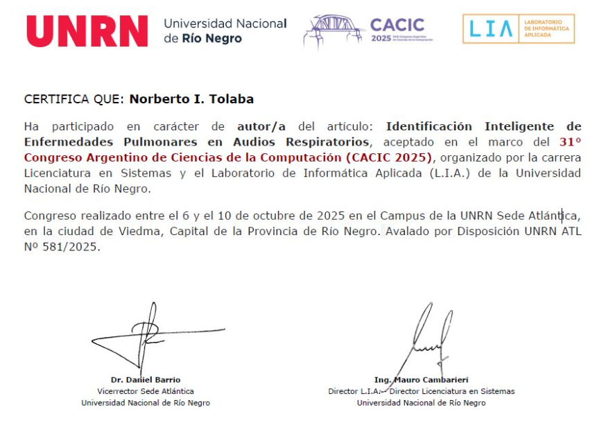
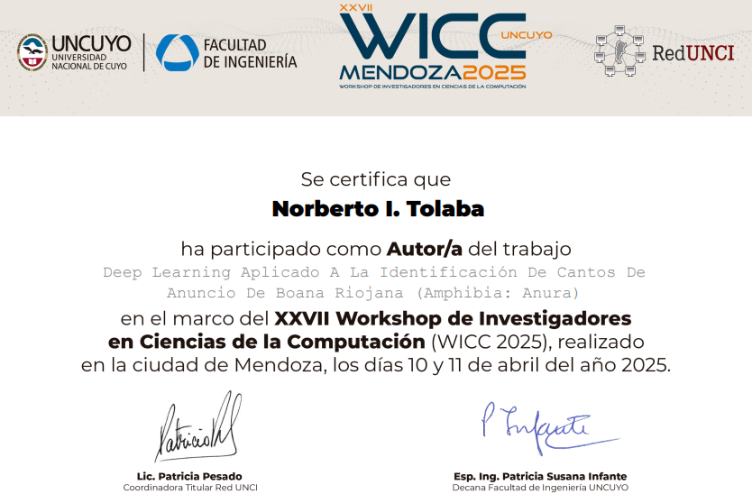

🔬 Publicación Científica CACIC
Identificación Inteligente de Enfermedades Pulmonares en Audios Respiratorios
🔹 Congreso
XXXI Congreso Argentino de Ciencias de la Computación (CACIC 2025)
🔹 Resumen
Se investigó el uso de Deep Learning para la clasificación automática de enfermedades pulmonares (Asma, EPOC, Neumonía y condición Normal) a partir de sonidos respiratorios. El trabajo evaluó las arquitecturas CNN y BiLSTM utilizando características acústicas extraídas mediante MFCC, obteniendo una precisión promedio superior al 80% de desempeño en clasificación multiclase.
🔹 Tecnologías
Python • TensorFlow • Keras • Librosa • MFCC
🔹 Evolución del proyecto
Esta investigación fue ampliada posteriormente en el Trabajo Final de Ingeniería, incorporando las arquitecturas híbridas CNN-LSTM y CNN-BiLSTM, alcanzando el mejor desempeño con CNN-LSTM (81% de exactitud). Finalmente, evolucionó hacia el proyecto End-to-End disponible en este portfolio, integrando PySpark, Apache Airflow, Docker, FastAPI y Render para automatizar el flujo completo, desde la ingesta y procesamiento de datos hasta el despliegue del mejor modelo para inferencias en tiempo real.
Python • PySpark • TensorFlow • Keras • Librosa • MFCC • Airflow • Docker • FastAPI • Render

🔬 Publicación Científica WICC
Deep Learning Aplicado a la identificación de Cantos de Anuncio del Anuro Boana Riojana (Amphibia: Anura)
🔹 Congreso / Workshop
XXVI Workshop de Investigadores en Ciencias de la Computación (WICC 2025)
🔹 Resumen
Se desarrolló un sistema basado en Deep Learning para la identificación automática de la especie Boana riojana mediante el análisis de sus cantos de anuncio. El trabajo incluyó el procesamiento de un conjunto de más de 4300 audios, extracción de características acústicas mediante MFCC, normalización de señales y entrenamiento de modelos DNN, CNN y LSTM para clasificación binaria.
Los modelos alcanzaron una exactitud superior al 88%, obteniendo su mejor desempeño con una CNN que logró 97% de exactitud, demostrando el potencial del aprendizaje profundo aplicado al monitoreo bioacústico.
🔹 Tecnologías
Python • TensorFlow • Keras • Librosa • MFCC
